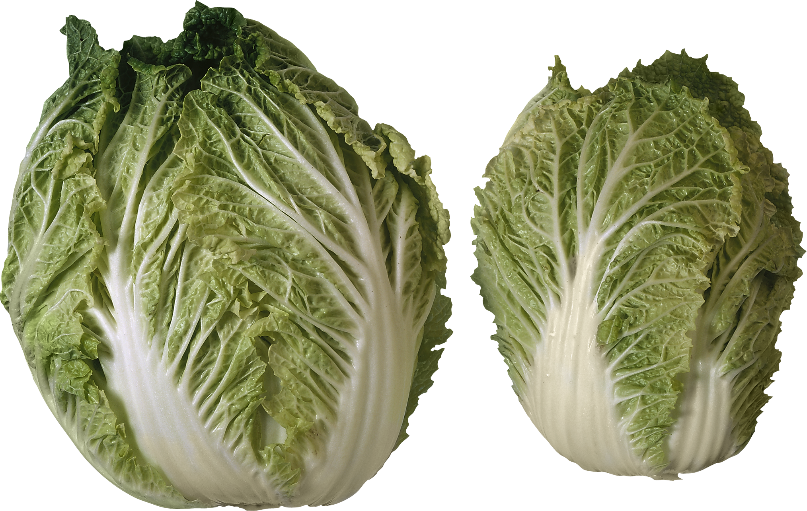
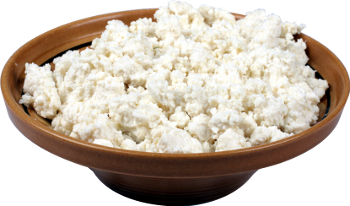
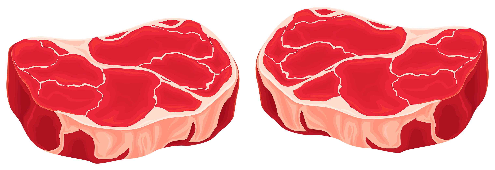
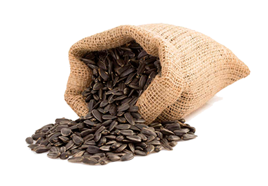
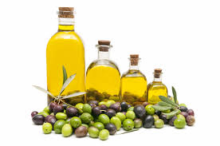

Зерновые
продукты

|
6-8 |
- 1 кусочек хлеба,
- 30 г крупы или сухого завтрака,
- 1/2тарелки*каши или макарон
|
Хлеб(лучше цельнозерновой), пита, крупи, хлебцы, крекеры и т.п. |
Главные источники энергии и пищевых волокон |
| Овощи

|
4-5 |
- 1 тарелка резаных листових овощей,
- 1/2тарелки приготовленных овощей(варка,тущение и т.д.),
- 170 мл овощного сока без сахара
|
Помидоры, картофель, морковь, горошек, кабачки, любая капуста, шпинат, фасоль и т.д. |
Богатые источники калия, магния и пищевых волокон |
Фрукты

|
4-5 |
- 170 мл сока,
- среднего размера фрукт,
- 1/2чашки**свежих или замороженных фруктов,1/4
чашки сухофруктов
|
Цитрусовые, виноград, бананы, абрикосы, персики, ягоды, фини, соки без добавки сахара |
Богатые источники калия, магния и пищевых волокон |
Молочные продукты
(обезжиренные
или с низким
содержанием жира)

|
2-3 |
- 220-230 мл молока,
- 1 чашка йогурта,
- 40-45 г сыра
|
Молоко, кисломолочные продукты, творог, сыры - все обезжиренные или низкожирные (1%) |
Богаты кальцием и белками |
| Постное мясо,
птица и рыба

|
< 170 г |
- 80-90 г приготовленного мяса, птицы или рыбы
|
Мясо постное, без видимого жира, птица без кожи. Рыба может быть жирной. |
Богаты белком и магнием |
| Орехи, семечки,
сухие фасоль и горох

|
4-5 г в неделю |
- 40-45 г орехов,
- 2 ст.л. семечек,
- 1/2тарелки приготовленной фасоли или гороха
|
Любые орехи, семечки подсолнечника и тыквы, фасол, горох |
Богаты энергией, магнием, калием, белками и волокнами |
| Жири и масла

|
2-3 |
- 1 ст.л. майонеза,
- 1 ч.л. растительного масла,
- 1 ч.л. спреда,
- 2 ст.л. салатного соуса
|
Спреды(мягкие маргарины), низкожирный майонез, салатные соусы, любые растительные масла |
Источник жирных кислот |
Сладости

|
< 5 в неделю |
- 1 ст.л. сахара,
- 1 ст.л. варенья
|
Сахар, варенье, конфеты, зефир, пастила, мороженое |
Сладости должны быть с низким содержанием жира |